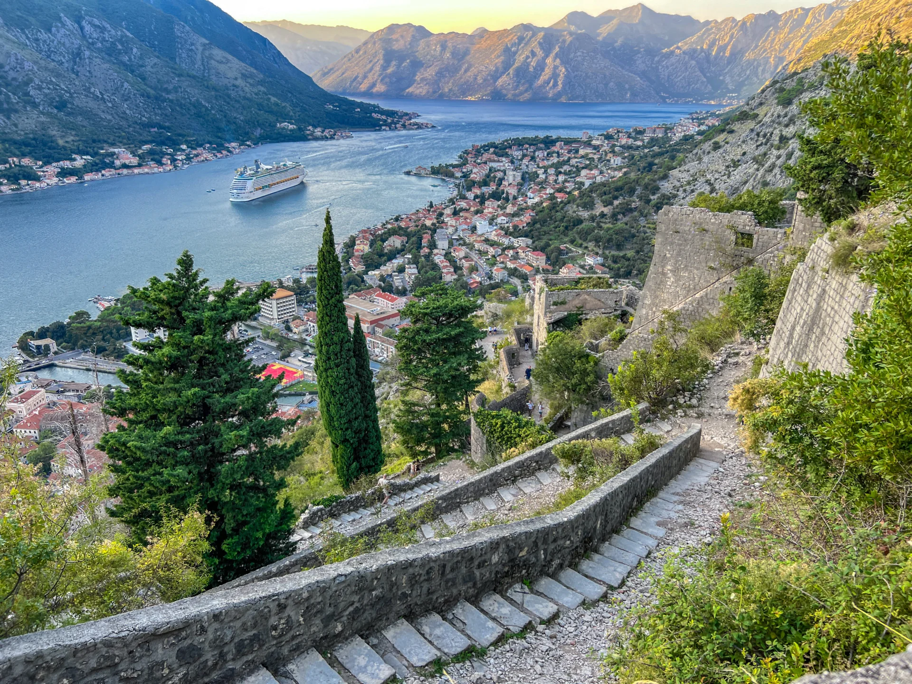

Kotor · pietra, mura e baia
01 · Kotor
Una città stretta tra mare e montagne
Dentro le mura, Kotor è un intreccio di piazze, vicoli e pietra chiara. Basta però alzare lo sguardo per capire cosa la rende diversa: le montagne arrivano quasi sull'acqua e trasformano la baia in uno scenario che sembra molto più nordico che mediterraneo.